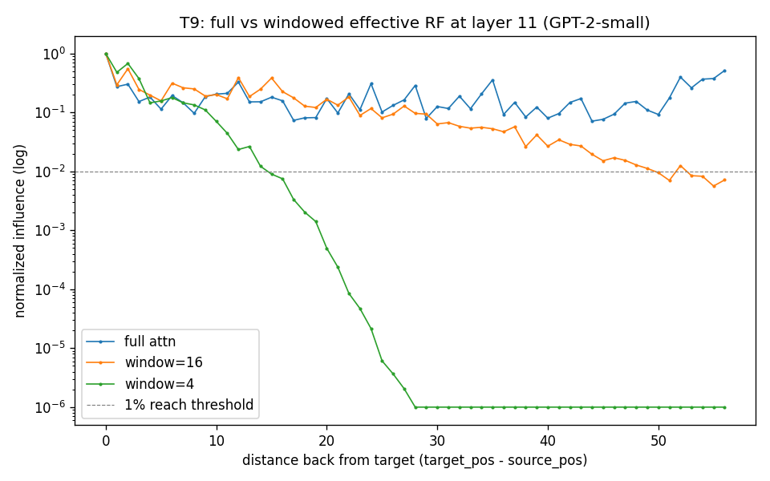
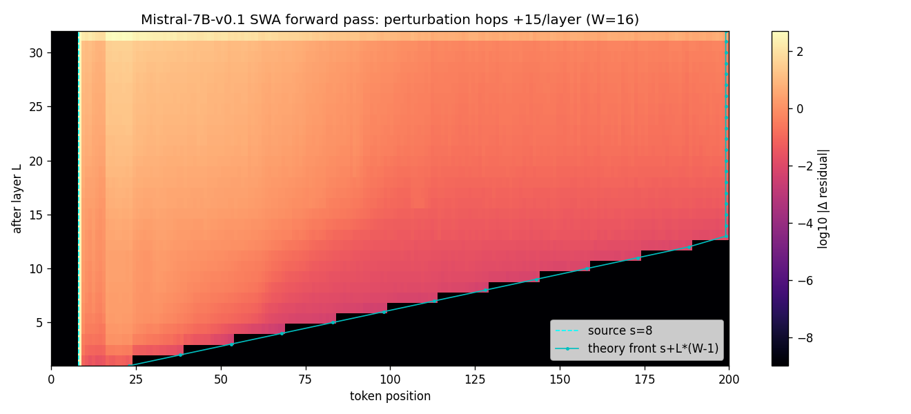
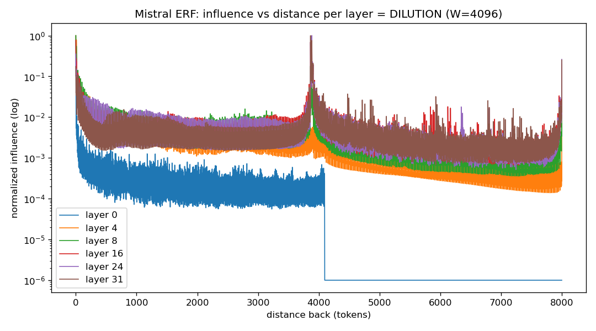
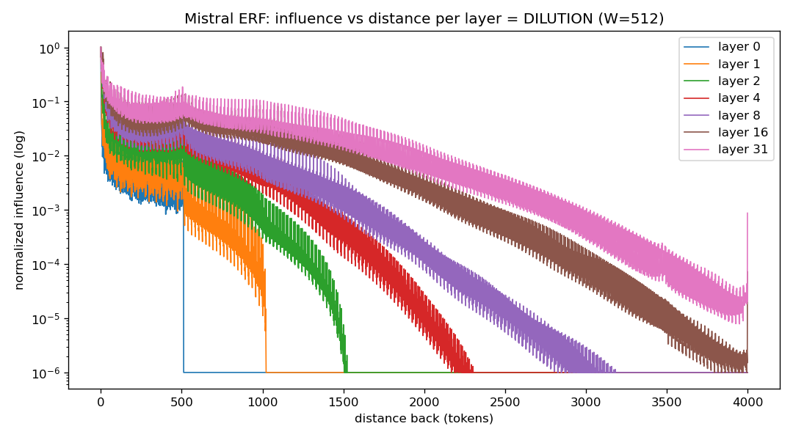
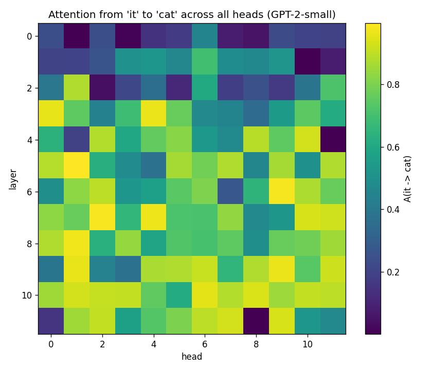
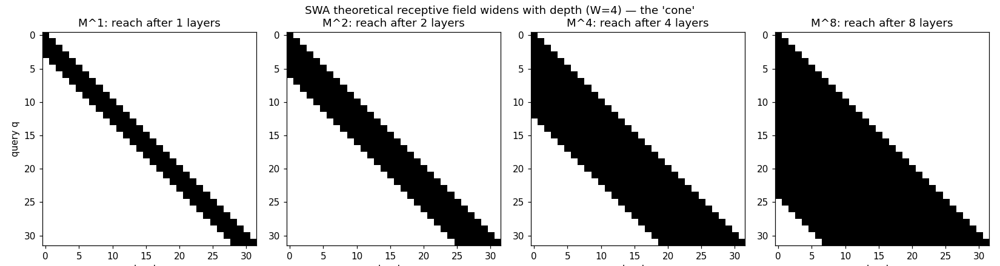
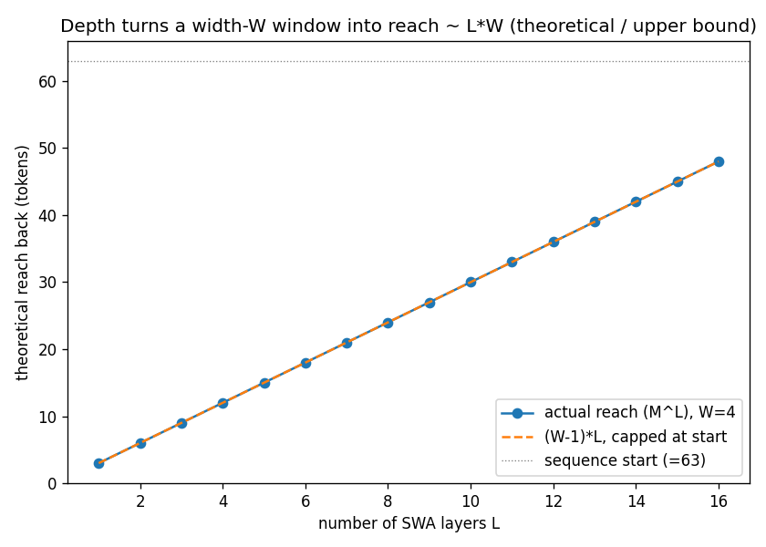

A transformer's theoretical receptive field is settled by arithmetic. Its effective receptive field has to be measured — and the two disagree by more than two orders of magnitude. This report walks the measurement: a gradient probe built on GPT-2 with imposed windows, then the same probe run on Mistral-7B-v0.1, a 7B model actually trained with sliding-window attention.
Mistral-7B-v0.1 stacks 32 layers of sliding-window attention with a 4096-token window. Multiply them and you get the number the architecture advertises: 131,072 tokens of reach. Measure what a token's representation is actually sensitive to, and the answer is a small, exponentially-weighted neighbourhood.
Participation ratio of the gradient-influence distribution — the effective number of source tokens the target actually leans on. Against 8,000 tokens reachable inside the prompt and 131,072 reachable in theory. Reachable is not used.
Stacked windowed attention grows reach by exactly W−1 per layer — the convolutional receptive-field
recurrence, reproduced to the token in a boolean-reachability demo and again in a forward-perturbation sweep on the
real 7B model. The staircase is razor-sharp with true structural zeros beyond it; bf16 rounding does not blur it.
Effective reach grows sublinearly while theoretical reach grows linearly. On GPT-2 with an imposed 4-token window, theory permits 48 tokens of reach by layer 11; the measurement says 14. On Mistral at W = 512 the efficiency ratio falls 0.93 → 0.33 over layers 0 → 8. Each window hop divides a far token's influence across ≈ W tokens, so distance costs influence exponentially.
116 of 144 GPT-2 heads appeared to link the pronoun it to its antecedent cat. Moving cat off position 0 collapsed that to 2. The signal was the position-0 attention sink, and it contaminated the causal gradient ruler too. The counterfactual control, not the ruler, produced the truth.
src/rf_probe.py — the probe rig: rulers A (attention weights) and D (gradient), plus reversible inference-time window maskingexperiments/t3_sanity.py — three-check correctness gate, all passing with exact zerosexperiments/gpu/mistral_erf.py — the 7B gradient probe with five distributional metrics and a sink controlPAPERS.md)
In a CNN, the receptive field is geometry, wired in before any data arrives:
r_l = r_{l−1} + (k_l − 1)·∏s_i. In a transformer with full self-attention, every token reaches every
token in a single layer — so the theoretical receptive field is trivially global and carries no
information. All the structure moves into the effective receptive field, which is content-dependent
and learned: it varies per input, per head, per layer.
That shift changes the question from how big is the box to where does influence actually flow, and what shapes it. And it makes the choice of measuring instrument the central design decision rather than an implementation detail.
Four ways to operationalise "attention receptive field", in increasing order of honesty and cost:
Four rulers, and what each one hides
Ruler A is the cheap visual. Ruler D is causal ground truth. This project committed to both, because the divergence between them is itself a result.
| Ruler | Measures | Captures | Blind spot | Paper |
|---|---|---|---|---|
| A · weights | raw A[i,j] | where it looks | ignores value norm, OV circuit, MLP, residual | Vaswani 2017 · Clark 2019 |
| B · norm | ‖A[i,j]·v_j‖ | look × magnitude | single layer only | Kobayashi 2020 |
| C · rollout | attention flow | multi-layer with residual | linear approximation | Abnar & Zuidema 2020 |
| D · gradient | ∂out_i / ∂in_j | true causal influence | expensive, first-order, noisy | Elhage 2021 |
Raw attention weights are a lying ruler: a head can place 90 % of its mass on the BOS token and barely affect the output. The Controls section shows exactly that failure happening in this project's own data.
Sliding-window attention is a depth-for-width trade that reconstructs full attention's effective receptive field — not its theoretical one — and the residual approximation error lives entirely in sharp, long-range, single-hop dependencies, which the efficient-attention variants patch back in with global, random, or sink tokens.
The reasoning behind it: full quadratic attention has a global theoretical field but a local-dominant
effective one, so you pay O(n²) for connectivity that mostly goes unused. Restrict each layer to a window
w and the cost drops to O(n·w); recover reach through depth, where L stacked windowed layers
give a theoretical reach of w × L. That is the convolutional recurrence reborn — sliding-window attention
is a transformer pretending to be a CNN over tokens.
Where the approximation is exact, and where it lies
Predicted before measuring; the Phase 2 figures confirm all three rows.
| Distance | Full attention | SWA + depth | Verdict |
|---|---|---|---|
| d ≤ w | direct, single hop | direct, single hop | ≈ identical |
| w < d ≤ w·L | direct, sharp | multi-hop, blurred and attenuated | degrades |
| d > w·L | reachable | structurally zero | fails |
Note the two rival approximation philosophies. Linformer and Performer approximate the matrix — low-rank and kernel reconstructions of the attention output. The sliding-window family approximates the effective receptive field, betting that influence is local and composable through depth. This project evaluates the second bet, which is why the evaluation lens is the ERF rather than attention-weight reconstruction error.
Part A — convolutional RF (foundation, geometric baseline)
N0 probe rig ──┬── N1 TRF analytic ──┐
├── N2 ERF empirical ─┴── N4 TRF-vs-ERF gap ──┬─ N5 depth
└── N3 sanity (1 conv) ├─ N6 kernel
├─ N7 stride
├─ N8 dilation
└─ N9 pooling
N5..N9 ── N10 ERF during training ── N11 RF vs task
── N12 architectures ── N14 synthesis
Part B — attention RF (the focus; ● = run, ○ = queued)
●T0 probe rig ──┬── ○T1 weights-vs-grad ●T3 sanity gate (ALL PASS)
├── ○T2 causal mask
└── ●T4 weight ≠ influence ← confirmed the hard way
└── ○T5 head taxonomy ──┬─ ○T6 depth
├─ ○T7 heads / d_head
├─ ○T8 positional encoding
├─ ●T9 sliding window ◄ thesis
├─ ○T10 sparse / dilated ◄ thesis
└─ ●T11 attention sinks ◄ thesis
── ○T12 ERF during training ── ○T13 effective context ── ○T14 synthesis
The kickoff insight that shaped the whole plan: the conv recurrence r_l = r_{l−1} + (k−1) and the SWA
reach formula w × L are the same equation. Part A is not background — it is the literal model for
windowed attention, and the eventual synthesis node.
Influence is operationalised as gradient magnitude:
ERF(j) = ‖ ∂y / ∂e_j ‖ — how much the probed unit y changes when source token
j's embedding is perturbed. This accounts for everything on the path (attention weights × values, MLPs,
the residual stream, RoPE), unlike raw attention weights.
A single measurement is defined by a (layer L, target position t, window W) triple.
N, subject to N > W — below the window, SWA is identical to full attention and the dial does nothing.e = embed_tokens(ids); e.requires_grad_(True).L, position t: h = hidden_states[L+1][t].‖h‖₂.backward().influence_j = ‖e.grad[j]‖₂, an L2 over d_model.
C1 — what we backprop from. The L2 norm of the residual stream at (L, t). The norm is
rotation-invariant and captures that unit's total representational magnitude, which makes it the closest analogue of
the CNN single-center-unit probe: an into-this-layer receptive field. Backpropagating the final logit
instead would measure a behavioural receptive field — a different, equally valid quantity.
C2 — how we reduce the input gradient. L2 over d_model, giving one influence number
per source position, and matching the GPT-2 phase so curves stay comparable.
Positions the causal or window mask forbids receive exactly zero gradient — the mask zeroes them before the softmax, so no signal flows back. "Outside the field" is therefore unambiguous rather than merely small, which is what makes the structural cliffs in the Phase 2 figures trustworthy.
With p_j = influence_j / Σ influence and distance d_j = t − j:
| Metric | Formula | Reads as |
|---|---|---|
| Mean effective lookback | Σ p_j · d_j | influence-weighted average tokens of lookback |
| 90 %-mass radius | min D with Σ_{d_j ≤ D} p_j ≥ 0.9 | the distance holding 90 % of influence — robust "useful lookback" |
| Threshold reach | max{ d_j : influence_j > 0.01·max } | the outer edge; compare to theoretical (L+1)·W |
| Participation ratio | 1 / Σ p_j² | effective number of tokens actually leaned on |
| Efficiency (eff/theory) | reach / min((L+1)·W, t) | fraction of theoretical reach actually used — the dilution ratio |
Several metrics because threshold-reach is fragile: one influence spike above 1 % at the far end pins it to the sequence length. The mass-weighted metrics capture the distribution, which is the phenomenon of interest. The Controls section shows threshold-reach failing exactly this way.
--mask-sink zeroes position 0 and the metrics are re-read. Never attribute influence to a position-0 token without a counterfactual
bf16 with SDPA attention (never materialises the N×N score matrix), all weights frozen with
requires_grad_(False), optional gradient checkpointing. Freezing drops the ≈ 14.5 GB of weight-gradient
buffers while keeping the forward activations the input-gradient needs, so the ERF value is identical. None of these
change which tokens influence the unit or how much — only speed and memory.
A memory asymmetry worth remembering: sliding-window attention's saving is forward-side, but the ERF probe is backward-side and pays the full long-sequence activation cost. Studying a 4096 window is therefore intrinsically an 80 GB-class job — the window only engages when the sequence exceeds it.
Three checks the rig had to pass before any downstream number was trusted. Prompt: "The cat sat on the mat", 6 tokens.
| Check | Verifies | Result |
|---|---|---|
| C1 causality | future positions get ~0 influence | PASS — max future influence exactly 0.00e+00 |
| C2 self-dominance | the target influences itself most | PASS — target norm 1.000, maximal |
| C3 window severance | window = 2 zeroes what full attention reaches | PASS — severed 0.00e+00 while full reaches them at 5.05 |
The exactness of C1 was a mild surprise: no epsilon thresholding is needed anywhere for causality. A second early observation, filed for later: at layer 0 the full-attention field is fairly flat across past tokens (0.14–0.30), not strongly local — residual mixing is near-uniform before heads specialise.
The cleanest possible ablation of windowing: take pretrained GPT-2-small, and change only the attention mask.
Each block's causal mask buffer is intersected with a band (i − j) < w, the forward pass runs, and the
original buffer is restored. Same weights, no retraining, so the resulting gap is purely windowing rather than
"weights that adapted to windowing".
Later verification, from reading the Mistral source: this imposed band is
and_masks(sliding_window_overlay(W), causal) — byte-for-byte the mask a real SWA model uses. The proxy
was faithful.
Dial = attention pattern (full vs w = 16 vs w = 4), held against a fixed model, depth, and 57-token prompt. Probe = gradient ruler on the last token, read at layers 0, 3, 7, 11. "Effective reach" = the farthest distance back carrying influence above 1 % of the maximum.
Effective reach grows with depth — and stalls well short of theory
GPT-2-small, gradient ruler, last-token target. Full attention is global at every layer; the windowed variants have to climb.
Theoretical reach at layer 11 is 192 tokens for w = 16 and 48 for w = 4; the 57-token prompt caps the former, but w = 4 is uncapped and reaches only 14 of a permitted 48 — about 30 %. Reach grows monotonically with depth, then saturates.
Influence versus distance at layer 11
Log scale. The full-attention curve stays flat across all 56 positions; each smaller window peels away from it and decays, hitting the structural-zero floor where the mask ends. The area between the curves is the approximation error.

Original matplotlib output from experiments/t9_swa_erf.py. Blue = full, orange = w 16, green = w 4; dashed line = the 1 % reach threshold.
w × L is an upper bound the network never cashes.Between the flagship and Phase 2, an ad-hoc probe asked how much the token cat influences the token it in "cat sat on mat but it tired", across depth. Sensitivity climbed 0.15 → 0.23 → 0.31 → 0.65 → 0.67 over layers 0/3/6/9/11, with cat going from the weakest influence at layer 0 to the strongest non-self influence by layer 6 — a depth-built link.
Two observations survived even after the finding itself was retracted (see Controls). First, the model hedges the ambiguous pronoun: influence spreads over cat/sat/mat with only a soft preference for the subject. Second, layer 11 is dominated by next-token-prediction pressure, so the final residual is the wrong place to read token semantics — mid-stack is the honest place.
Phase 1 imposed windows on weights that never trained under them. The open question that motivates Phase 2:
does training with a sliding window change the effective receptive field, versus merely imposing the
window at inference? Mistral-7B-v0.1 is the canonical test subject — the only Mistral-family model with SWA
(v0.2 and v0.3 set sliding_window=None; Mixtral is MoE with no SWA).
A query at position q may attend to key kv iff kv ≤ q (causal) and
kv > q − 4096 (window). In the HuggingFace source this is literally two boolean predicates ANDed
together, and the sliding-window argument carries the comment "main diff with Llama" — strip it and Mistral's
attention is Llama's. Modern transformers vmaps these predicates rather than materialising a
32k × 32k mask, which matters at max context: a dense mask would be ≈ 1 billion booleans per layer.
Two efficiency consequences: attention costs O(n·W) instead of O(n²), and because no query ever needs
a key older than W, generation only stores the last W keys and values per layer — a
rolling-buffer KV cache capped regardless of sequence length.
Perturb one embedding, run clean and perturbed passes, and measure where the difference has spread by each layer.
Prediction: the front advances exactly W−1 per layer. The window was shrunk to 16 purely for visibility —
at native 4096 a single layer reaches 4095 tokens and there is nothing to see. The hop is a property of the
mask, not the weights, so shrinking it is legitimate.
Forward reach advances by exactly W−1 per layer
Mistral-7B-v0.1, W = 16 imposed, sequence 200, perturbation at position 8. Measured against theory s + L·(W−1).
Exact agreement at every layer until the front hits the end of the sequence at layer 13. The frontier is a razor-sharp staircase with literal structural zeros beyond it — bf16 rounding does not blur the boundary. A real trained 7B reproduces toy boolean-matrix reachability to the token.
The staircase, as rendered
Perturbation magnitude by (layer, position). The cyan line is theory; the black strip at positions below 8 is causally unreachable — earlier tokens cannot attend to a later perturbation.

Gradient ERF of the last token at native W = 4096, sequence 8000, across layers 0 to 31. By layer 8, influence reaches the entire prompt. The effective field is nonetheless two orders of magnitude smaller.
Lookback grows with depth — mean and 90 %-mass radius
Both series are distances in tokens on one axis. Mean lookback is the influence-weighted average; the 90 %-mass radius is the distance containing 90 % of all influence.
Effective number of tokens actually leaned on
Participation ratio 1 / Σ p². Rises steeply out of layer 0, then plateaus around 500 — while the reachable set is 8,000 and the theoretical set is 131,072.
Single series — the chart title names it, so no legend box is needed.
Influence versus distance, per layer, at native W = 4096
Three structures to read: layer 0 shows a hard cliff at exactly 4096 (single-layer direct reach) then the zero floor; deeper layers leak past 4096 but with a visible step down at the boundary — the extra-hop penalty, still imprinted at layer 31; and the spike near distance 8000 is the position-0 attention sink.

The window leaves a scar in the effective field: tokens just inside the window measurably beat tokens just outside it, all the way to the top of the stack. Direct evidence for the "one extra hop costs you" mechanism.
Native W = 4096 pins theoretical reach to the sequence length by layer 1, which hides the depth story entirely. At W = 512 with a 4000-token sequence, theory grows ≈ 512 per layer for about eight layers before capping — enough room for linear theory and sublinear measurement to visibly diverge.
Theoretical reach grows linearly; effective reach does not
Mistral-7B, imposed W = 512, sequence 4000. Both series are distances in tokens. The shaded band between them is the dilution.
Theoretical reach is (L+1)·W, capped at the sequence length from layer 8 onward — which is why the
efficiency ratio below is only defined for layers 0 to 8.
Efficiency ratio: the fraction of theoretical reach actually used
At layer 0 the model uses 93 % of its single-window reach. By layer 8, theoretical reach has grown eightfold and it uses 33 % of it.
Layers 16 and 31 are deliberately omitted, not truncated: theoretical reach is capped at the sequence length there, so the ratio is not meaningful. Their measured reaches (1,755 and 2,147 tokens) appear in the chart above.
The dilution curve at W = 512
Each layer shows a hard cliff at exactly (L+1)·W — the structural bound, matching the boolean-reachability staircase — plus a roughly exponential decay within it. Deeper layers push the cliff out and soften the slope.

The decay within the reachable range is log-linear, so the far half of what is nominally reachable is diluted below 1e-3. The cliff being razor-sharp on a real trained model is the strongest single piece of evidence that the structural bound holds exactly while the effective field does not.
To influence a token d away, signal must hop through d/W windows. Each hop spreads
its contribution across ≈ W tokens, so a single far token's influence is divided again at every hop — giving
approximately exponential decay with distance, which is exactly the straight log-scale slopes in the figures. More
depth means more hops, means more division: depth widens the receptive field but dilutes its edge.
This is the convolutional effective-field law reproduced for a real, trained, sliding-window transformer — and it is the precise sense in which SWA "approximates" full attention. It reconstructs the local effective field cheaply, and the long tail it nominally reaches arrives heavily attenuated.
The most instructive result in this project is a retraction. It is worth reading before any of the numbers, because it establishes what the numbers had to survive.
Hypothesis. A dedicated coreference head links the pronoun it to its antecedent
cat — standard head-specialisation lore. Method. The full 12 × 12 grid of GPT-2 attention
weights A(it → cat) on "cat sat on mat but it tired".
Result. 116 of 144 heads had their argmax from it land on cat, topping out at 0.996. Too universal to be a mechanism — which is what triggered the control.
The control. Rewrite the sentence so cat is no longer the first token: "the dog saw a cat sat on mat but it tired", putting cat at position 4 and the at position 0.
Moving one word off position 0 destroys the signal — while the position-0 signal holds
Before → after the counterfactual. If a coreference mechanism existed, the it → cat measures would survive the move. They do not; the it → position 0 measures barely change.
Ruler A failed loudly — a pure sink artifact. Ruler D failed quietly: it is causally correct, since the position-0 token genuinely carries influence as the sink, but attributing that influence to the word cat rather than the position-0 role was an interpretation error. Neither ruler self-disambiguates word identity from positional role. The control, not the ruler, produces truth.
The head-hunt grid that looked like a discovery
All 12 layers × 12 heads of A(it → cat). The sheer coverage is the tell — a real mechanism localises to a few heads.

Two days later the Mistral runs carried a --mask-sink control from the start. Both conditions were re-run
with position-0 influence zeroed. At W = 512 the metrics were identical to rounding. At native W = 4096 the
mass-weighted metrics moved under 3 % — but threshold-reach collapsed.
The sink control killed a metric, not the finding
Threshold reach (1 % of max) at native W = 4096, before and after zeroing the position-0 sink. The earlier reading "reach saturates by layer 4" was the sink spike, not real influence.
Removing the sink revealed a genuine depth-growth of effective reach — 1,293 → 4,083 → 7,998 across layers 4, 8, 16 — that the sink had been masking by pinning reach to the sequence length. A control that improves a result by deleting a metric is the good case.
The gradient is causally correct — the sink truly does influence the output — but a single far spike inflates max-relative metrics while barely moving mass-weighted ones. Mean lookback, 90 %-mass radius and participation ratio all move under 3 %. The dilution finding is sink-robust; threshold-reach alone is not, and is reported only alongside its masked twin.
| What failed | Diagnosis | Resolution |
|---|---|---|
| TransformerLens unavailable | will not install on Python 3.14 | pivoted to raw HuggingFace transformers plus own hooks — a better fit for the from-scratch-hooks ethos anyway |
| Coreference hypothesis | position-0 attention sink masquerading as a mechanism | retracted; counterfactual control added to the standing protocol |
| Threshold-reach metric | sink-contaminated at shallow layers with the native window | demoted; mass-weighted metrics lead, threshold-reach reported only with its sink-masked twin |
| numpy upgrade broke torch | pip install -U numpy pulled 2.x, binary-incompatible with the server's torch and scipy | pinned numpy<2 |
| transformers 5.12.1 import crash | eagerly imports PIL.Image.Resampling; server Pillow too old | pinned transformers==4.57.3 — also matches the source read in Phase 2 |
| Device mismatch in metrics | distance vector on CPU, influence on CUDA | explicit .cpu() |
| Mixtral nearly selected | sliding_window=None — it has no SWA at all | caught by a config check before any GPU spend; locked Mistral-7B-v0.1 |
| Windows console crash | a ✅ emoji under cp1252 | ASCII output |
Both tools below compute theoretical reach — exact arithmetic and exact boolean reachability, the quantities this project verified to the token. Neither predicts effective reach: that has to be measured, and the measured anchors are marked where they exist.
Information flow across L sliding-window layers is exactly L-hop reachability in the
attention graph. If M is the boolean mask with self-loops, then (M^L)[q, kv] is true iff
token q can be influenced by token kv after L layers. The grid below computes
that matrix power live — drag the sliders and watch the thin diagonal band widen into the causal triangle.
Rows are query positions, columns are key positions; a filled cell means the query can be influenced by that key
after L layers. Reach saturates when the cone hits the start of the sequence — which is exactly why the measured
table in Phase 1 stops growing. Verified against the project's own demo: at n = 64, W = 4 the reach was
3, 6, 9, … 48 for L = 1…16, an exact +3 per layer.
The multiplication behind every "our model handles N tokens" claim, with the measured reality alongside where this project has it.
L × W is an upper bound the network does not cash. At the one configuration where both quantities were
measured — Mistral-7B, W = 4096, L = 32 — theoretical reach is 131,072 tokens and the effective field is
≈ 500 tokens, centred about 3,400 back. The ratio at any other (W, L) is unmeasured, and the
efficiency curve is known only for W = 512 across layers 0 to 8.
The matplotlib output as produced by the experiment scripts, for reference.


(W−1)·L line up to saturation.(L+1)·W plus exponential decay within.| ID | Hypothesis | Outcome | Evidence |
|---|---|---|---|
| H1 | Effective reach ≪ theoretical, growing sublinearly | Confirmed | eff/theory 0.93 → 0.33 over layers 0→8; effective field ≈ 500 tokens against 131,072 theoretical |
| H2 | Native-trained SWA yields a larger effective reach than an imposed mask at matched depth and window ratio | Not resolved | both show sublinear saturation, but no matched-ratio comparison was run — the ratios and sequence lengths differ across phases |
| H3 | Position-0 attention sink present and requires control | Confirmed | sink present in both models; mass-weighted metrics robust to under 3 %; threshold-reach is not |
H2 is the honest gap in this work: the interesting comparison — does training under a window change the effective field — remains open.
A token's actual lookback is a small, exponentially-weighted neighbourhood, not the architectural reach.
Theoretical reach grows linearly with depth and is exact — the cliff sits at precisely (L+1)·W on a real
trained model. Effective lookback grows sublinearly: mean ≈ 650 tokens over 32 layers at W = 512, ≈ 3,400 at
W = 4096, with a participation ratio near 500. The gap widens with depth because each window hop divides a far
token's influence across ≈ W tokens. Sliding-window attention reconstructs the local effective field
cheaply; the long tail it nominally reaches is heavily diluted.
| Convolution | Sliding-window attention | |
|---|---|---|
| Per-step reach | kernel k | window W |
| Reach recurrence | r_l = r_{l−1} + (k−1) | r_l = r_{l−1} + (W−1) → ≈ W·L |
| Effective ≪ theoretical | √depth Gaussian, central fraction of the box | sublinear saturation, exponential decay with distance |
| Mechanism of the gap | signal from edge pixels attenuates through depth | each hop divides influence across ≈ W tokens |
| Failure mode patched by | dilation, skip connections | global tokens, random tokens, sink re-injection |
The convolutional half of the design was never background. It is the literal model for windowed attention, and this correspondence is the spine of the planned synthesis node.
L × W. The advertised reach is an upper bound the network does not cash. Where both are measured, they differ by two orders of magnitude.sliding_window=None. One config read prevented it.full − window influence by distance, to quantify the three-regime prediction directly| ID | Decision | Choice | Rationale · rejected alternative |
|---|---|---|---|
| D1 | Model source | pretrained GPT-2-small | real induction and sink heads available immediately; no training needed for the whole critical path. Rejected: from-scratch first — would delay every measurement behind a training run |
| D1′ | Tooling (amended) | raw HuggingFace transformers + own hooks | TransformerLens will not install on Python 3.14; HF was already present and fits the from-scratch-hooks ethos |
| D2 | Primary ruler | A + D | A for visualisation, D for causal ground truth; their divergence is itself a result. Rejected: A+B only — descriptive, not causal |
| D3 | SWA isolation | impose the window mask at inference | same weights, mask is the only dial, so the gap is purely windowing. Rejected: train a windowed net — conflates windowing with weights that adapted to it |
These three compose into the property that made the project cheap: the entire attention critical path runs with zero training. Only the head-emergence node genuinely needs a trainable net.
| Job | Precision · setup | Peak VRAM | Ran on |
|---|---|---|---|
| Phase 1 — GPT-2 probes and T9 | fp32, eager attention | — | CPU laptop |
| Boolean reachability demo | numpy | — | CPU laptop |
| Forward propagation, seq ≤ 2k | bf16, SDPA, forward only | ≈ 16–18 GB | A10 24 GB |
| ERF grad probe, seq ≈ 5k | bf16, SDPA, weights frozen | ≈ 35–43 GB | A100 40 GB class |
| ERF grad probe, seq 8k | bf16, SDPA, weights frozen | ≈ 45–55 GB | GH200 96 GB |
| Same + gradient checkpointing | bf16, recompute in backward | ≈ 24–30 GB | 40 GB fallback, ≈ 2× slower |
Model download ≈ 13 s on the Lambda link, load ≈ 2 s. Freezing the weights is the single largest saving for a measure-only probe, dropping ≈ 14.5 GB of gradient buffers with no effect on the measured value.
Part B — attention receptive field
| Key | Paper | Claim used |
|---|---|---|
| Vaswani 2017 | Attention Is All You Need | full self-attention = global theoretical field; causal mask = backward field |
| Clark 2019 | What Does BERT Look At? | heads specialise — local, delimiter, syntactic |
| Kobayashi 2020 | Attention Is Not Only a Weight | norm-weighting changes the apparent field versus raw weights |
| Abnar & Zuidema 2020 | Quantifying Attention Flow | rollout accounts for the residual stream across layers |
| Elhage 2021 | A Mathematical Framework for Transformer Circuits | previous-token heads; patching as a causal field measure |
| Olsson 2022 | In-context Learning and Induction Heads | induction heads emerge in a training phase change |
| Vig & Belinkov 2019 | Analyzing the Structure of Attention | attention structure varies systematically with layer depth |
| Michel 2019 | Are Sixteen Heads Really Better Than One? | head redundancy and specialisation; many are prunable |
| Su 2021 | RoFormer (RoPE) | rotary encoding injects relative-distance structure |
| Press 2021 | ALiBi — Train Short, Test Long | linear distance penalty gives a strong locality prior |
| Beltagy 2020 | Longformer | window + dilation + global tokens; stacked reach ≈ w × L |
| Zaheer 2020 | Big Bird | window + random + global recovers full-attention expressivity |
| Xiao 2023 | StreamingLLM — Efficient Streaming LMs with Attention Sinks | massive mass on initial tokens; windowing severs the sink; re-injection fixes it |
| Liu 2023 | Lost in the Middle | effective context ≪ architectural context; U-shaped position recall |
| Jiang 2023 | Mistral 7B | causal SWA W = 4096 over 32 layers; rolling-buffer KV cache; GQA |
Part A — convolutional receptive field (the geometric baseline)
| Key | Paper | Claim used |
|---|---|---|
| Luo 2016 | Understanding the Effective Receptive Field in Deep CNNs | effective field ∝ √depth, a central Gaussian fraction of the theoretical box; expands during training |
| Araujo 2019 | Computing Receptive Fields of CNNs | closed-form recurrence including stride, dilation and pooling |
| Yu & Koltun 2016 | Multi-Scale Context Aggregation by Dilated Convolutions | dilation expands the field exponentially; gridding artifacts |
| He 2016 | Deep Residual Learning | skip connections shrink the effective field relative to the theoretical one |
| Ronneberger 2015 | U-Net | encoder–decoder field for dense prediction |
receptive-field-playground/
├── docs/
│ ├── DESIGN.md theory (conv / attention / SWA) + both task graphs + decisions
│ ├── PAPERS.md 16 primary papers mapped to nodes
│ ├── PROGRESS.md Phase 1 synthesis
│ ├── TASK1_mistral_swa.md Mistral SWA architecture, theory, source read, depth
│ ├── TASK2_methodology.md how the ERF is measured (9 sections)
│ ├── TASK2_results.md Mistral ERF + dilution results
│ ├── TASK2_lambda_deploy.md GPU budget, deploy and run plan
│ ├── report.html this report
│ ├── figures/ 7 figures
│ └── runlog/ 9-field per-run logs, 4 days
├── src/
│ └── rf_probe.py the probe rig: rulers A and D, window ablation
└── experiments/
├── t3_sanity.py correctness gate (C1/C2/C3) — all pass
├── t9_swa_erf.py Phase 1 flagship
├── swa_minimal.py minimal windowed-mask demo
├── swa_depth_demo.py boolean reachability, mask cone, reach vs depth
├── swa_forward_propagation.py forward wavefront (CPU)
├── probe_it_cat.py coreference probe
├── it_cat_head_hunt.py 12x12 head grid
├── it_cat_sink_control.py counterfactual control, ruler A
├── it_cat_grad_control.py counterfactual control, ruler D
└── gpu/
├── mistral_propagation.py forward wavefront on the 7B
└── mistral_erf.py the ERF probe + metrics + sink control# Phase 1 — CPU, GPT-2-small
python experiments/t3_sanity.py # gate: must print "T3 SANITY: ALL PASS"
python experiments/t9_swa_erf.py # reach table + figures/t9_swa_erf.png
python experiments/swa_depth_demo.py # boolean reachability + cone figures
# Phase 2 — GPU, Mistral-7B-v0.1 (gated repo: huggingface-cli login)
# env: transformers==4.57.3, numpy<2, pillow>=10, torch 2.7 + CUDA
python experiments/gpu/mistral_propagation.py --window 16 --seq 200 --src 8
python experiments/gpu/mistral_erf.py --seq 8000 --layers 0 4 8 16 24 31
python experiments/gpu/mistral_erf.py --window 512 --seq 4000 --layers 0 1 2 4 8 16 31
python experiments/gpu/mistral_erf.py --window 512 --seq 4000 --mask-sink
Every probe, sweep and training run appends a nine-field block to runlog/YYYY-MM-DD.md:
date · goal · hypothesis · experiment · expected outcome · actual outcome · surprises · what failed · what I
learned · next step. The dial that changed leads; the grounding paper is cited in the hypothesis field. The
surprises and what failed fields are where this project's real content lives — the retracted
coreference finding, the numpy break, and the Mixtral near-miss were all caught because those fields have to be filled
in honestly.